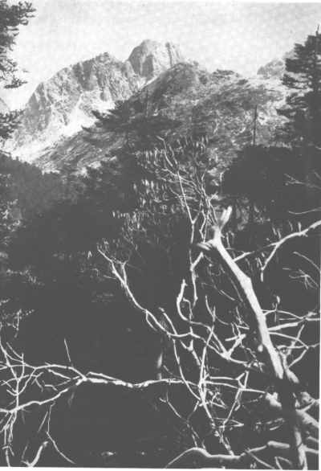

ON the quarter-inch Indian survey map of Sikkim, the name Chumunko is given to a mountain a little north of the Natu La on the frontier between Sikkim and the Chumbi Valley of Tibet; .html name, Simugupchurhi, is put down near by. Several of our porters had often passed through this district, but even when prompted they did not know either name. The form lines of the map and the streams are only indicated diagrammatically, and the main reason why we gave the name Chumunko to our mountain was, I think, because it could more easily be pronounced. To us the significance of the climb was in its relation to the Mount Everest Expedition as a whole, and not that it was an ascent of a particular and hitherto unclimbed peak. Nevertheless, as this account may be the only record, a photograph is reproduced here, as it is probably the best way of defining the mountain which we climbed.
The advance party of the Mount Everest Expedition, on March 9th, reached a dak bungalow at a height of 12,000 ft., attractively situated on the edge of a mountain tarn called Tsomgo. The district had formerly been heavily glaciated, and at this time of year when there was still a good deal of snow about we were reminded of Scotland at Easter. It was an ideal place to spend five or six days acclimatizing, and that we – actually needed acclimatization was proved by the headaches and a disinclination to eat which we experienced during a short scramble from the bungalow to 14,500 ft.
During this short excursion we saw a shapely peak to the north, which looked both near and accessible, and after a careful reconnaissance with field-glasses we decided that the southern face of the mountain might perhaps be climbed. The next day, Longland, Shipton, Wyn-Harris, and I set off for the mountain with six Sherpa and Tibetan porters, who carried sleeping bags, two small tents of Marco Pallis’s design, and food for three days.
Chumunko, which was only 5 miles north of the dak bungalow according to the map, was, however, not so accessible as we had thought, because on the north facing slopes of the three valleys which we had to cross there was a thick rhododendron scrub with snow below. The rhododendron only occurred on north-facing slopes, the southern slopes being for some reason quite free, and as we were travelling north we had to struggle with the scrub only on the descents: but this was difficult enough, and we hoped to find an alternative route on the way back. As none of us knew this type of country, there was the constant problem of how much to contour, how much to attempt to follow ridges, and how much to make a direct route down the rhododendron-covered slopes and across the valleys. In the main we followed the shortest route, but at the end of a hard day camp was pitched at the upper limit of trees at a height of 11,500 ft. and 2,000 ft. or more below where we had hoped. A great compensation was, however, a large fire of pine and rhododendron, in the pleasant warmth of which we decided to rise next day at 5 a.m., leave camp at 6, and go very slowly for our objective, willingly abandoning it if it proved a strain due to our unfitness, or lack of acclimatization.
The following morning Wyn-Harris led off at exactly the right pace – I believe that any of the other three of us would have been unable to have kept the pace down – and as a result, after two and a half hours, we arrived as fresh as if we had only just left our tents at a point about 3,000 ft. above our camp. We felt, therefore, that we had lost little by being compelled the day before to pitch camp so low. The south face of our mountain showed a snowy triangular area of rocks, which led up to the lowest point of the summit ridge, and we judged that this would be less steep than the other parts of the face or the east and west ridges. The best line of approach to this part seemed to be up a buttress below and to the left of the less steep ground.
Wyn-Harris and I, who were ahead, started up the buttress, but were soon slowed up in a difficult chimney. Shipton, at Longland’s instigation, tried an alternative route, but it was not for those who had long been away from the practice grounds of the British Isles. I remember being mighty glad that it wouldn’t go. At this stage, coming up second with the feeling that one must hurry was exhausting in our unacclimatized condition, and not till I was ahead later in the day did I shake off the conviction that I had forgotten how to move rhythmically and comfortably over rocks of moderate difficulty such as we were on. The climbing was, I believe, interesting, but I have no clear recollections until the other party went ahead and forced a way to the top of an iced chimney. This led to the top of the buttress and to the bottom of the triangle of easier ground. Here we halted for five minutes, and compelled ourselves to eat a biscuit; it seemed that we should get up if time and the gathering clouds allowed us.
Delightful slabs, then a traverse along snowy ledges, and finally a snow couloir led to the lowest part of the summit ridge. From here the southern peak was a scramble over easy rocks, and we reached the summit just before noon. I suppose that our height was between 16,500 and 17,000 ft., and we all felt a little headachy. Away to the north across a snow col was a dull-looking peak, definitely a little higher than the one on which we stood, and there was some discussion whether to go on or turn. I remember expressing my opinion that we had got all the real satisfaction out of the climb, and that to cross over the col and up the other peak, which was hardly what we had set out to do, would perhaps make too long a day and interfere with the mysterious processes of acclimatization. But I was alone in this view, and on we went. I confess that I was personally glad that we did, but I got a malicious satisfaction later that day to find that height was apparently affecting me less than either Wyn-Harris or Longland.
We reached the second summit at five minutes past one, and we had previously decided that there was no need to turn till f p.m. There was by now a good deal of drifting cloud, and we saw only glimpses of the Scottish Highland country to the south, and only one glimpse of Chomalhari in Tibet, rising to 23,000 ft.; the Kanchenjunga group remained in cloud. Soon after turning round we were continuously enveloped in cloud and some hail fell. We had again to climb the southern summit as traversing seemed impracticable, and as we were descending from here to the lowest point of the summit ridge a cold wind developed, blowing the rope out horizontally in handsome curves in a way which I can never see without being pleasantly reminded of Mr. Willink’s drawing in the Badminton book. On the face, Shipton and Longland got ahead, and Wyn-Harris and I were further slowed up by the fear of sending stones down on their heads. From the top of the buttress they shouted through the cloud, telling us of their whereabouts, and suggested that they should go on. We asked that the candle-lantern might be Ieft there for us. I believe we thought ourselves the more exhausted party, but when we got back we found that the others had thought the same about themselves. The hail which had threatened to be serious had only put a thin sprinkling on the rocks, and the descent was enjoyable despite our headaches. Wyn-Harris and I led through each other as seemed appropriate and talked of mountaineering etiquette, the good training we had received as members of the Cambridge Mountaineering Club, and we reminisced about Sunday mornings in Van Noorden’s rooms in Clare. The usual topic of food did not particularly appeal to us. We reached camp half an hour after the others, just as it got quite dark.
The following morning at sunrise there were 2 in. of snow over everything, including the porters who were sleeping huddled together in the open round a dead fire. We Ieft early because we feared difficulties on the rhododendron-covered slopes, but the journey was easier than we had anticipated; already we had learnt something of how to deal with this particular difficulty and, moreover, as our objective was definite we could rely more on the judgment of our porters.
Chumunko to all of us was a satisfying and nearly perfect episode. I do not wish this to become an attempt to justify the excursion. It has been criticised on the grounds that we overstepped our acclimatization. One of the party had an abnormal form of Cheyne-Stokes breathing which lasted for two days, which perhaps was caused by the climb. I emulated the pioneers of high climbing by bleeding at the nose. On the other hand, afterwards it was practicable to curb our desire for the many handsome peaks which are passed on the way to Mount Everest, and undoubtedly Wyn-Harris and I, who for several years had been unable to visit the Alps, profited by having our confidence restored and our standards righted by climbing again with other mountaineers on a peak of general Alpine character.